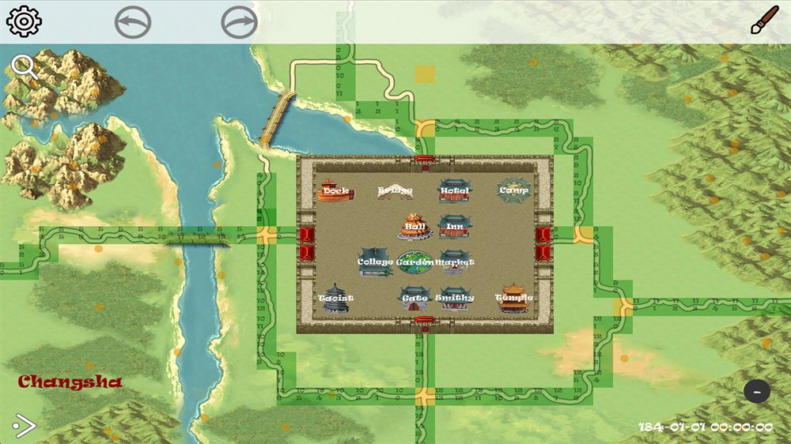
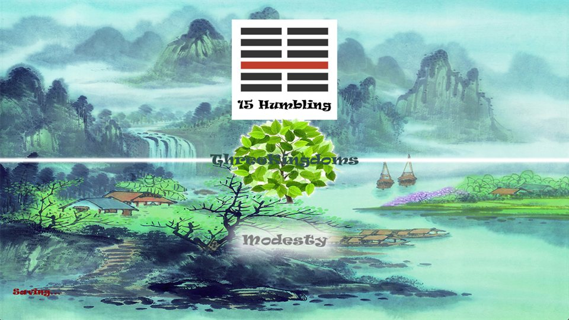
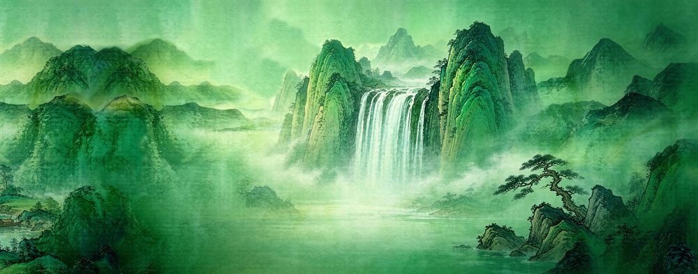

The city in the scroll
The classic SanguoSeason carries the warmth of Gusu Prosperity (姑苏繁华图): dense streets, waterways, trade, buildings, and people. Gusu is a historic name associated with Suzhou. The painting’s appeal here lies in the sense of a place full of life.
The painting dates from the Qing dynasty, long after the Three Kingdoms. It is an artistic influence, not a claim about what a third-century city looked like. Preserving that distinction lets the game value its visual heritage without mistaking it for archaeological evidence.

The clarity of an older map
The early SeasonTree studies offer another kind of inheritance: a distinctly two-dimensional world with recognizable terrain, compact building shapes, and an interface organized around the map.

These designs remind us that atmosphere must work with legibility. A player needs to tell where a settlement ends, where a route leads, and which parts of the image can be acted on.
What ink can suggest—and conceal
Ink-like landscapes offer mist, open space, and softer transitions. That softness is valuable for a page background, but less useful when a game needs precise boundaries or an immediately readable map.

Blue-green mountains, with room to grow
Blue-green landscapes give the new 3D project a stronger starting point for terrain: layered ridges, distinctive peaks, open water, and a palette that can carry depth without relying entirely on realistic lighting.

For the new game, this can become the main visual language. For SanguoSeason, it is an addition to be blended with the Gusu heritage. Those are deliberately different decisions.
A quiet frame for changing artwork
SanguoSeason’s page keeps a warm scroll-like atmosphere; Sanguo3D gives the blue-green mountains more room. Creators and Ming have distinct provisional visual treatments, while all projects share the same reading structure and day/night controls.
Archive images keep their original colors in both themes. The surrounding page changes, not the historical material. As new artwork and gameplay become available, they can enter this frame without requiring the whole site to change its character.
Artwork sources & reuse notes